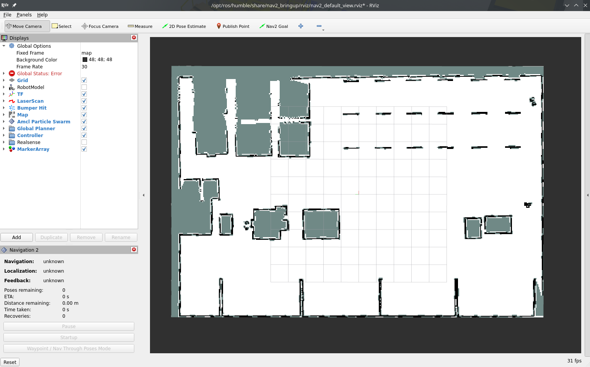
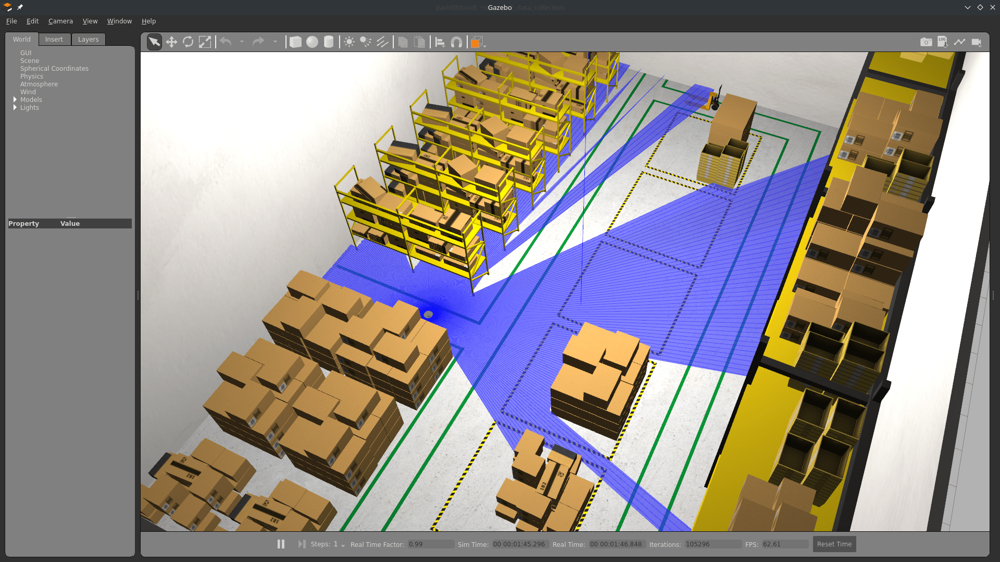
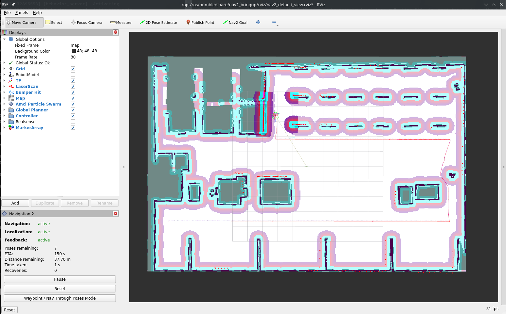

Turtlebot3 AWS Warehouse InfluxDB
dc_bridge blesses exactly five Destination types — postgres, s3, file, console,
vector (see Destinations) — and InfluxDB is not one of them. This demo is
not a peer of the PostgreSQL/RustFS demos: it exists to show
how to reach a destination dc_bridge doesn't bless directly, via the
ADR-0003 passthrough escape
hatch — a raw Vector sink config loaded
through custom_config_files, consuming the same public dc.<tag> routes a blessed
Destination would. Read Destinations's "Passthrough" section first
if you haven't already; this page only covers what's specific to InfluxDB.
You will also need 3 terminal windows, to:
- Run the Nav2 turtlebot3 launchfile: it starts localization, navigation and RViz
- Run navigation inspection demo
- Run DC
Using a different terminal window for DC helps reading its information.
Setup the environment
Python dependencies
For this tutorial, we will need to install all dependencies, the demo dashboard's included (uv owns them; see Setup):
uv sync
Setup the infrastructure
InfluxDB
InfluxDB will be used to store our data and timestamps. To start it, follow the steps (tools/infrastructure/docker/docker-compose.influxdb.yaml, unchanged by the DC 2.0 rework — this demo still needs a real InfluxDB instance to point the passthrough sink at).
One-time: install the passthrough sink config
dc_bridge has no InfluxDB Destination to configure through ROS parameters, so the
Vector sink itself ships as a plain file in this package,
dc_demos/config/tb3_simulation_influxdb_sink.toml, installed to the package's share
directory. Copy it into place once before the first launch:
mkdir -p ~/.dc
cp "$(ros2 pkg prefix dc_demos)/share/dc_demos/config/tb3_simulation_influxdb_sink.toml" ~/.dc/
dc_params_file's custom_config_files (see below) points at this path.
Setup simulation environment
In the terminal 1, source your environment:
source /opt/ros/jazzy/setup.bash
source install/setup.bash
Nothing else has to be exported. dc_simulation puts its own models and worlds on
GZ_SIM_RESOURCE_PATH through its environment hook.
This demo used to run aws_robomaker_small_warehouse_world under Gazebo Classic. That
package has no Jazzy release — its own jazzy branch still hard-depends on gazebo_ros,
which was never published for Jazzy. The warehouse now comes from dc_simulation
instead, which vendors the same AWS RoboMaker props (shelves, clutter, trash cans) into
a gz-sim world of its own.
Terminal 1: Start Navigation
Then, in the same terminal (1), start the simulation and Nav2. DC comes up separately in terminal 2, so turn it off here:
ros2 launch dc_demos tb3_qrcodes.launch.py \
headless:=False \
use_dc:=False
RViz and gz-sim will start: now you see the robot in the warehouse, and the map on RViz. AMCL sets the initial pose itself, so there is no need to click "2D Pose Estimate".
The warehouse world is heavy — 317 model instances. Expect a slow start and a real-time
factor well under 1 without a GPU; see dc_simulation/README.md for measured numbers.


Terminal 2: Start DC
Run colcon build to compile the workspace:
colcon build
Now, start the demo:
ros2 launch dc_demos tb3_simulation_influxdb.launch.py use_sim_time:=True
use_sim_time defaults to False — without the override above, DC's Position
measurement looks up TF transforms on the wall clock while the simulation publishes
them on Gazebo's sim clock, which throws "extrapolation into the past"/"transform does
not exist" errors and can crash measurement_server outright once the two clocks
drift far enough apart.
The robot will start collecting data.
InfluxDB 1.x's line protocol locks a field's type from its first write for the life
of the database. cpu.average is 0 (a bare JSON integer, not 0.0) on its very
first sample — before the plugin has two polls to compute a delta from — so Vector's
influxdb_logs sink writes it as an integer; every later float sample then fails with
field type conflict: ... is type float, already exists as type integer and is
silently dropped, forever, for that field in that database. Verified: after a full
demo run, SELECT count("/cpu/average") FROM dc returns nothing at all. This isn't
DC-specific — it's InfluxDB 1.x line protocol meeting JSON's 0/0.0 ambiguity — and
the only fix is dropping and recreating the dc database (influx -execute "DROP DATABASE dc; CREATE DATABASE dc") before a run where you need that field.
Terminal 3: Start autonomous navigation
Execute
ros2 run nav2_simple_commander demo_security
The robot will start moving and you will be able to see all visualizations activated in RViz:

Visualize the data
Grafana's own datasource is PostgreSQL now (see PostgreSQL/RustFS demo), and every dashboard shipped with the DC 2.0 infrastructure — Home, Robot, KPI and Fast DDS statistics — is backed by it: there is no Grafana dashboard for this demo's data, since it never touches PostgreSQL. To look at what landed in InfluxDB, use InfluxDB's own tooling instead:
influx -database dc -execute "SELECT * FROM dc ORDER BY time DESC LIMIT 20"
or query its HTTP API directly:
curl -G 'http://127.0.0.1:8086/query' --data-urlencode "db=dc" --data-urlencode "q=SELECT * FROM dc ORDER BY time DESC LIMIT 20"
Understanding the configuration
Measurement server
Measurements
measurement_plugins sets which plugin to load. We collect
System measurements:
Robot measurements:
Environment measurements:
Infrastructure measurements:
- InfluxDB health, a
TCPHealthcheck against InfluxDB's own port (8086) — unrelated to the passthrough mechanism, this is the same kind of infrastructure health-check measurement the PostgreSQL/RustFS demo uses for its own destinations.
None of this changed from the destination-agnostic measurement configuration used elsewhere in DC 2.0 — nested/flatten still shape the JSON for InfluxDB's line-protocol-oriented storage, and images (map, camera) are still stored as base64 strings since that's the only field type Grafana (or any consumer reading straight out of InfluxDB) can render from a database column. What changed is only how the Records reach InfluxDB in the first place — see the Destination section below.
measurement_server:
ros__parameters:
...
camera:
plugin: "dc_measurements/Camera"
topic_output: "/dc/measurement/camera"
save_raw_base64: true
nested: true
flatten: true
...
influxdb_health:
plugin: "dc_measurements/TCPHealth"
topic_output: "/dc/measurement/influxdb_health"
polling_interval: 5000
host: "127.0.0.1"
port: 8086
name: "InfluxDB"
include_measurement_plugin: true
nested: true
flatten: true
An example camera Record, now without a tags field (that mechanism no longer exists — a Destination's inputs list decides routing instead). nested: true + flatten: true together produce /-prefixed dotted-path keys such as /camera/camera_name, which is also exactly what lands as the InfluxDB column name, since nothing downstream renames them:
{
"/camera/base64/raw": "/9j/4AAQSkZJRgABAQAA...",
"/camera/camera_name": "Intel Realsense",
"custom_keys": ["robot_name", "id"],
"date": 1677668926.700422,
"flattened": true,
"host": "127.0.0.1",
"id": "be781e5ffb1e7ee4f817fe7b63e92c32",
"name": "camera",
"nested": true,
"robot_name": "Turtlebot",
"run_id": "218",
"source_type": "fluent",
"tag": "dc.measurement.camera",
"timestamp": "2026-09-04T00:00:40.252Z"
}
Conditions
We also initialize conditions:
- min_distance_traveled
- max_distance_traveled
They are used in the distance traveled measurement to only take values in a certain range.
Destination: the passthrough
There is no InfluxDB Destination to bless, but destinations is not empty — it names a
file Destination whose inputs are what put these topics on the dc.<tag> routes the
snippet consumes:
dc_bridge:
ros__parameters:
shipper:
data_dir: "$HOME/.dc/buffer"
destinations: ["records_log"]
records_log:
type: file
receives: records
inputs: ["/dc/measurement/cpu", "/dc/measurement/memory", ...]
path: "/tmp/dc/tb3_simulation_influxdb_records.ndjson"
time_key: "date"
time_format: "double"
custom_config_files: ["$HOME/.dc/tb3_simulation_influxdb_sink.toml"]
vector_forward_host: "127.0.0.1"
vector_forward_port: 24224
dc_bridge derives both its ROS subscriptions and its dc.<tag> route branches from
destinations, and never reads a passthrough snippet's inputs — so a passthrough always
accompanies at least one blessed Destination covering the same topics. file is the
anchor in every passthrough demo in this repo now, including this one — blessed console
moved to a passthrough recipe of its own (ADR-0003,
Destinations: Recipes) —
but it would have been the wrong anchor for this demo regardless, even back when it was
still blessed: this demo collects base64 camera and map images, which make for unreadable
terminal output. The Elasticsearch tutorial explains the file
anchor mechanics in more detail.
destinations: [] does not work as a way to say "passthrough only". rclcpp cannot load an
empty YAML sequence (no inferable element type), so the Bridge dies at startup with
parameter_value_from failed for parameter 'destinations': No parameter value set and
never reads custom_config_files at all.
custom_config_files lists raw Vector config snippets that are merged as-is alongside whatever dc_bridge itself renders (here, nothing) — see Destinations's passthrough section for the full contract (naming collisions, vector validate as a startup backstop, etc.). The snippet installed above:
# ~/.dc/tb3_simulation_influxdb_sink.toml
[sinks.influxdb]
type = "influxdb_logs"
inputs = [
"dc.dc.measurement.cpu",
"dc.dc.measurement.memory",
"dc.dc.measurement.os",
"dc.dc.measurement.uptime",
"dc.dc.measurement.camera",
"dc.dc.measurement.cmd_vel",
"dc.dc.measurement.distance_traveled",
"dc.dc.measurement.position",
"dc.dc.measurement.speed",
"dc.dc.measurement.map",
"dc.dc.measurement.influxdb_health",
]
endpoint = "http://127.0.0.1:8086"
measurement = "dc"
[sinks.influxdb.influxdb1_settings]
database = "dc"
username = "dc"
Each inputs entry is one of the stable dc.<tag> routes dc_bridge exposes for every topic that appears in any Destination's inputs or, as here, any custom_config_files snippet's inputs — the Tag is the topic name with the leading / dropped and the rest of the /s turned into . (/dc/measurement/cpu → dc.measurement.cpu), and the route is dc.<tag> (so dc.dc.measurement.cpu). Vector's influxdb_logs sink type is what actually understands InfluxDB 1.x's write API; nothing in this snippet is DC-specific beyond the dc.<tag> inputs.